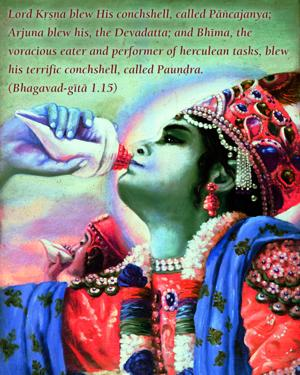
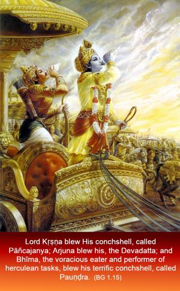
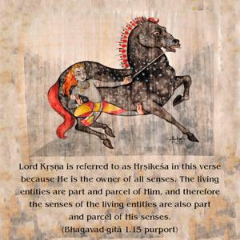
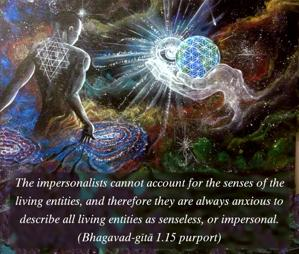

Lord Kṛṣṇa blew His conchshell, called Pāñcajanya; Arjuna blew his, the Devadatta; and Bhīma, the voracious eater and performer of herculean tasks, blew his terrific conchshell, called Pauṇḍra.




Lord Kṛṣṇa is referred to as Hṛṣīkeśa in this verse because He is the owner of all senses. The living entities are part and parcel of Him, and therefore the senses of the living entities are also part and parcel of His senses. The impersonalists cannot account for the senses of the living entities, and therefore they are always anxious to describe all living entities as senseless, or impersonal. The Lord, situated in the hearts of all living entities, directs their senses. But He directs in terms of the surrender of the living entity, and in the case of a pure devotee He directly controls the senses. Here on the Battlefield of Kurukṣetra the Lord directly controls the transcendental senses of Arjuna, and thus His particular name of Hṛṣīkeśa. The Lord has different names according to His different activities. For example, His name is Madhusūdana because He killed the demon of the name Madhu; His name is Govinda because He gives pleasure to the cows and to the senses; His name is Vāsudeva because He appeared as the son of Vasudeva; His name is Devakī-nandana because He accepted Devakī as His mother; His name is Yaśodā-nandana because He awarded His childhood pastimes to Yaśodā at Vṛndāvana; His name is Pārtha-sārathi because He worked as charioteer of His friend Arjuna. Similarly, His name is Hṛṣīkeśa because He gave direction to Arjuna on the Battlefield of Kurukṣetra.
Arjuna is referred to as Dhanañjaya in this verse because he helped his elder brother in fetching wealth when it was required by the king to make expenditures for different sacrifices. Similarly, Bhīma is known as Vṛkodara because he could eat as voraciously as he could perform herculean tasks, such as killing the demon Hiḍimba. So the particular types of conchshell blown by the different personalities on the side of the Pāṇḍavas, beginning with the Lord’s, were all very encouraging to the fighting soldiers. On the other side there were no such credits, nor the presence of Lord Kṛṣṇa, the supreme director, nor that of the goddess of fortune. So they were predestined to lose the battle – and that was the message announced by the sounds of the conchshells.